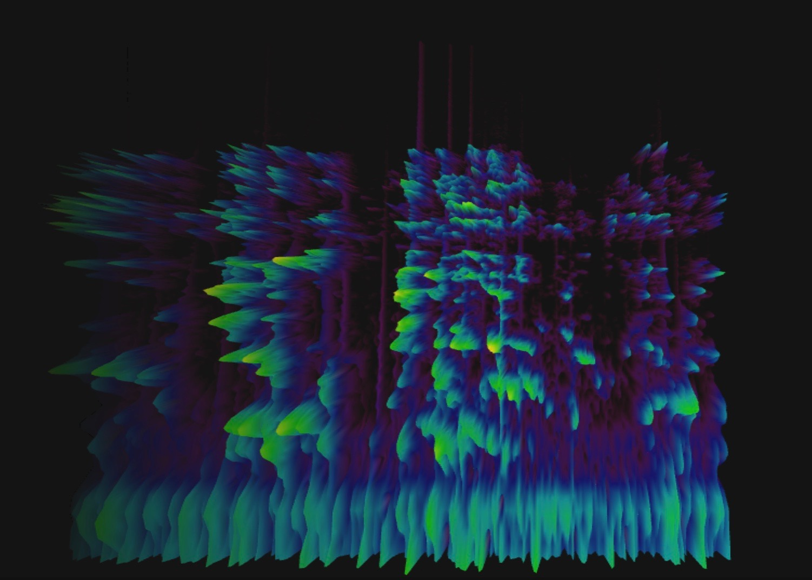
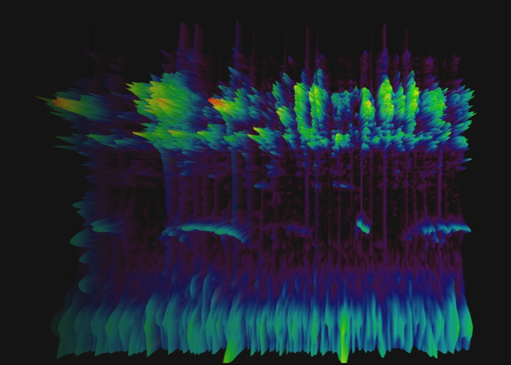
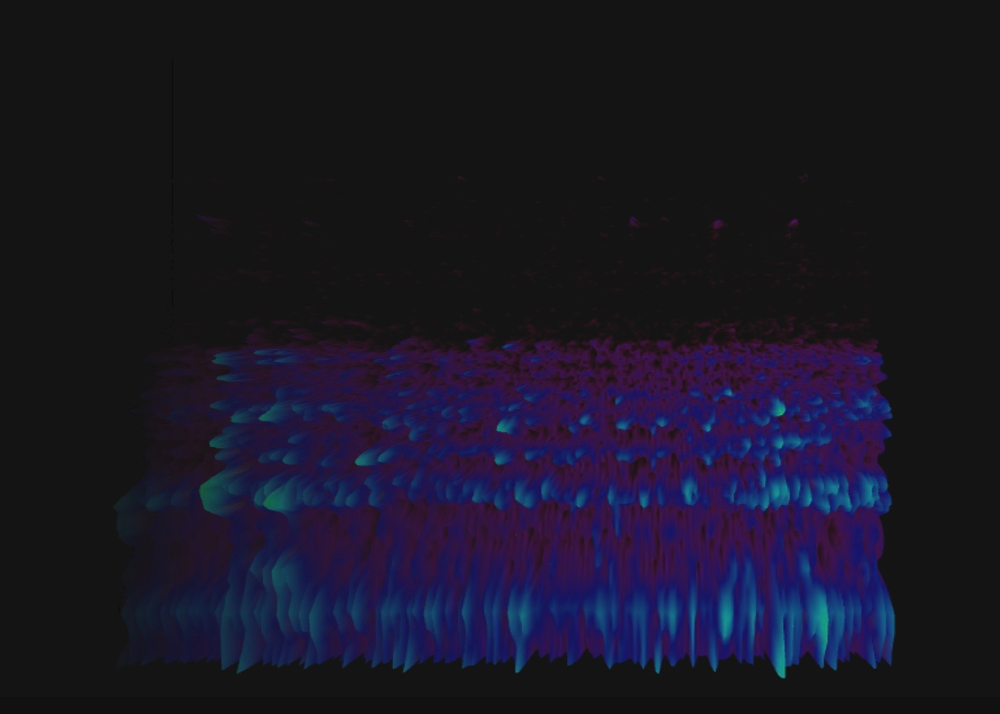

Ideas in Form
Identify domains of interest, and explore those domains through project-based responses across a range of media: from 1D (writing) to 5D (user interaction). As we move through these projects, we ask whether the form of inquiry affects the core nature of the work.
5D
These cacti are programmed to playfully interact with light (for the amusement of us, humans). Technically speaking, their pots have photoresistors that pick up light signals and send the signals to a computer that processes the input and generates an output. Turn sound on for full effect.
Meet the "users": cactus 1, cactus 2, and cactus 3-- each containing a photoresistor that responds to light
Three plants gossiping in the shadows
Three plants chat in the light
Behind the scenes: three photoresistors, Arduino hardware, and Arduino and Processing code
4D
Sound (a time-based dimension) is added back over the spectrograms. Although this was less successful as an artifact in itself, it did prompt useful critique. Specifically, I left this critique ready to loosen the constraints I'd put on myself going forward.

3D
These spectrograms visualizes three dimensions of sound (time, frequency, intensity), each on their own axis. The sounds come from the BBC Sound Effects library, and the spectrograms were generated using Chrome Music Lab software. Each image is accompanied by a caption that describes the audio scene, as written in the BBC library.
Group of 16-19 year old boys talking, occasional laughter
Ethiopia, exterior, small group of people talking in Somali language

6 month old baby girl, talking nonsense

Two & a quarter year old baby talking nonsense
Budgerigars and doves in Warratah Park with occasional wind in dry leaves and crow calling

One unshod horse trots through puddles, with some birdsong
Summer atmosphere during hot weather with close buzzing of bees
Water trickling over leaves at night in Opapaka Walk, Waitomo
2D
A sketch begins to think about the starting question: what does it mean to listen to plants? What could it mean for this project?
1D
This brainstorming exercise identifies three initial domains to explore: natural language processing, interspecies communicaiton, and generative drawing.
The initial exploration in 1D (writing) can be read here, with access to a New School account.